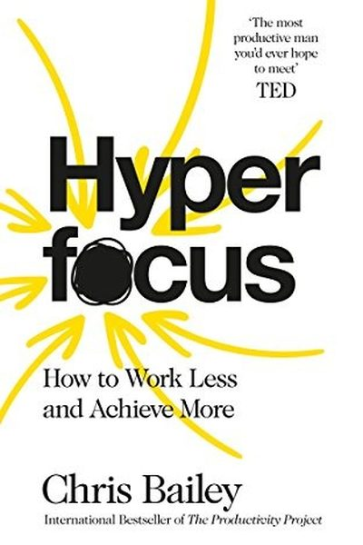
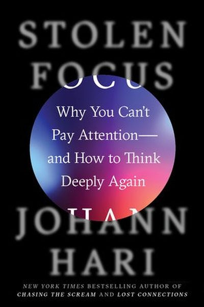
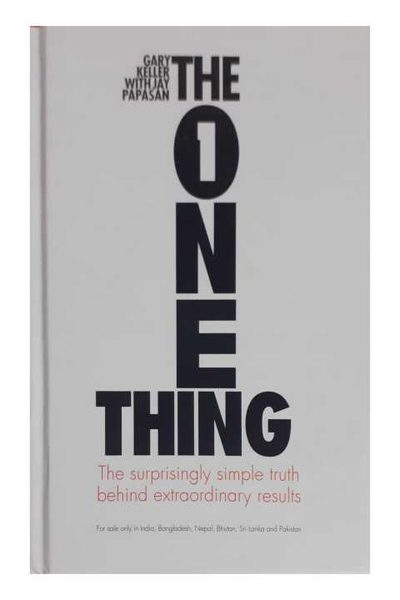
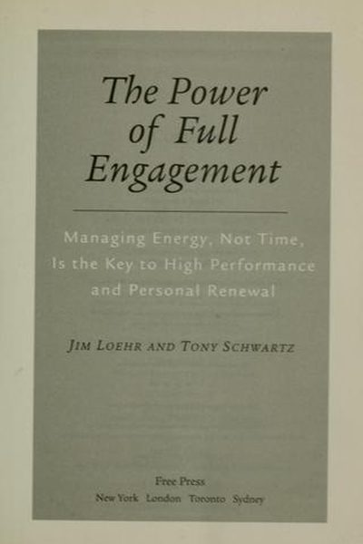
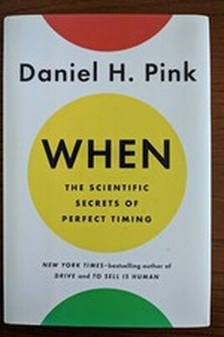
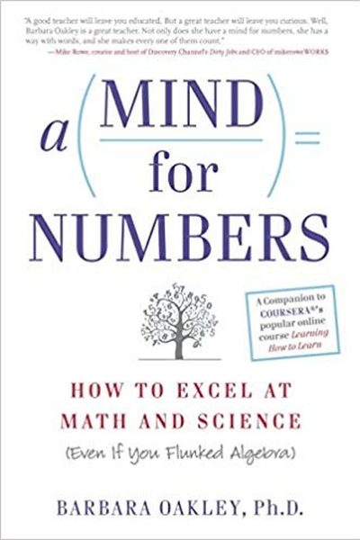

Library › Books like Getting Things Done
10 Books Like Getting Things Done That Hit the Same Nerve
You finished Getting Things Done by David Allen and want the same energy: Capture everything, clarify the next action, and trust the system - a mind like water responds perfectly, then… Here are 10 more that scratch the same itch, each with a free chapter-by-chapter breakdown, key lessons and action steps on this shelf.
 Four Thousand Weeks
Productivity is a trap: clearing the decks just refills them faster. Freedom begins when you accept you'll never get it all done - and choose deliberately.
READ THE FREE BREAKDOWN →
Four Thousand Weeks
Productivity is a trap: clearing the decks just refills them faster. Freedom begins when you accept you'll never get it all done - and choose deliberately.
READ THE FREE BREAKDOWN →
 Essentialism
Almost everything is noise. The Essentialist explores widely, eliminates ruthlessly, and executes effortlessly on the vital few.
READ THE FREE BREAKDOWN →
Essentialism
Almost everything is noise. The Essentialist explores widely, eliminates ruthlessly, and executes effortlessly on the vital few.
READ THE FREE BREAKDOWN →

Hyperfocus Your attention is a finite budget. Spend it deliberately: hyperfocus for depth, scatterfocus for creativity. READ THE FREE BREAKDOWN →
Stolen Focus Your attention isn't broken - it's being stolen. The system (apps, phones, work culture) is designed against you; fight back structurally. READ THE FREE BREAKDOWN → The 12 Week Year
Compress your year to 12 weeks and urgency returns. Vision, weekly plans, and accountability do the rest.
READ THE FREE BREAKDOWN →
The 12 Week Year
Compress your year to 12 weeks and urgency returns. Vision, weekly plans, and accountability do the rest.
READ THE FREE BREAKDOWN →

The ONE Thing Success is sequential, not simultaneous. Find the ONE thing that makes everything else easier - and protect it like your life depends on it. READ THE FREE BREAKDOWN →
The Power of Full Engagement Time is fixed, energy is not. Manage your energy like an athlete - full engagement, full recovery - and performance follows. READ THE FREE BREAKDOWN →
When Time is not just a container; it has shape - and matching tasks to the day's waves is a hidden productivity lever. READ THE FREE BREAKDOWN →
A Mind for Numbers Math and science aren't about talent - they're about two modes of thinking, chunks, and the courage to be a beginner. READ THE FREE BREAKDOWN →Every summary is free: lessons, examples, action steps, audio in your language.